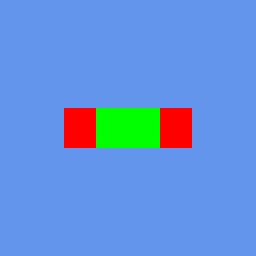

Graphics State
Implementation status: at snapshot 009d40f5, all four state-object families are present, with built-in presets and custom state creation, and the state types themselves are well covered by CNA's Graphics unit tests. What varies is whether the selected renderer honours a given state. Two alpha.1-era gaps are closed: DIRECTX12 now implements scissor, viewport, stencil reference and blend factor on its draw routes, and WebGPU's stencil (single and two-sided) now has registered tests and reports StencilBuffer. What remains renderer-dependent is documented per section below: stencil needs a stencil-capable depth buffer, wireframe is not honoured everywhere, and the default Reach profile refuses separate alpha blend. Read the per-section notes and Renderers before designing around any state you cannot see take effect.
Do not treat a positive SupportsCapability() answer as proof that a state is honoured. GraphicsCapability now has 19 members. GraphicsDevice derives seven of them (CompiledEffects, the two float-render-target entries, HalfFloatTextureLinearFiltering, ComputeShaders, IndirectDraw and, combined with the profile, MultipleRenderTargets) from dedicated hooks whose default is false; the other members fall through to the renderer's own switch, whose shared default is true. Every 3D renderer except DIRECTX9 now overrides that switch with real answers or probes; DIRECTX9 alone inherits the permissive defaults wholesale, so its cells mean “not known to be unsupported” rather than a measured device answer. Verify visually or with a pixel test, and read Tutorial 133 for the detailed capability profile that replaces guessing.
Overview
All render state in CNA follows the XNA 4.0 immutable state-object pattern. Rather than toggling individual render states through a stateful device API, you create a state object (either a built-in preset or a custom instance), then assign it to the appropriate property on GraphicsDevice before issuing draw calls.
The four state-object types and where they live on GraphicsDevice:
graphicsDevice.setBlendStateProperty(...)— controls how incoming fragment colours are blended with the render targetgraphicsDevice.setDepthStencilStateProperty(...)— controls depth testing, depth writing, and stencil operationsgraphicsDevice.setRasterizerStateProperty(...)— controls face culling, fill mode, and scissor/depth biasgraphicsDevice.getSamplerStatesProperty()[n]— per-slot texture filtering and address modes (up to 16 slots)
CNA's C++ spelling of XNA's C# properties is a getXProperty() / setXProperty() pair; there is no graphicsDevice.BlendState = ... member assignment. Each getter has a reference-returning form and each setter takes the state object by const reference and copies it.
State assigned to GraphicsDevice applies to every draw call that follows until you change it again. A common mistake is forgetting to reset state between rendering passes — for example, leaving BlendState::Additive active when starting the opaque geometry pass. Always set state explicitly at the beginning of each logical pass.
Always reset state after each pass. State is persistent — it does not reset automatically between frames or between draw calls. Set the appropriate preset at the start of every opaque pass, every transparent pass, and every 2D/HUD pass. SpriteBatch never restores state: Begin() applies its blend, sampler (slot 0), depth-stencil and rasterizer states to the device, and End() leaves them there, so a 3D pass drawn after a SpriteBatch pass starts with AlphaBlend, DepthStencilState::None and the batch's sampler unless you set your own again.
Assigned states are frozen
Assigning a state object to the device, or to a sampler slot, binds it. From then on every property setter of that object throws System::InvalidOperationException ("Cannot modify a BlendState after it has been bound to a GraphicsDevice."), exactly as in Microsoft XNA. This applies through every alias of the object, including the reference returned by graphicsDevice.getBlendStateProperty(), because the device's field and the object you assigned share one state. The static presets are bound from the start.
So configure a state completely before assigning it, and change state by assigning a different object. To derive a variation of a preset or of the current state, copy-construct it: copy construction creates a new, unbound, mutable state, while copy assignment creates an alias.
BlendState additiveOnlyRgb = BlendState::Additive; // copy construction: mutable
additiveOnlyRgb.setColorWriteChannelsProperty(
ColorWriteChannels::Red | ColorWriteChannels::Green | ColorWriteChannels::Blue);
graphicsDevice.setBlendStateProperty(additiveOnlyRgb); // binds it; no more setters from here
// graphicsDevice.getBlendStateProperty().setColorSourceBlendProperty(Blend::One); // throwsAssigning a disposed state throws ObjectDisposedException, except that re-assigning the state that is already active is a no-op, as in XNA. The complete rules, what each renderer receives and when, and the per-renderer differences are on State objects: identity, binding and what reaches the renderer.
BlendState
BlendState describes how the output of a pixel shader (the source) is combined with the existing colour already in the render target (the destination). CNA provides four built-in presets that cover the most common use cases.
Built-in presets
| Preset | Use case |
|---|---|
BlendState::Opaque |
Fully opaque geometry — blending is disabled entirely. The fastest blend mode; use it for all solid meshes. |
BlendState::AlphaBlend |
Standard transparency using premultiplied alpha. This is the default for SpriteBatch and the correct choice for textures exported from tools that premultiply alpha at export time. |
BlendState::NonPremultiplied |
Straight (non-premultiplied) alpha. Use when loading PNG files whose RGB channels have not been premultiplied by the alpha value — a common default for art tools that export plain PNG. |
BlendState::Additive |
Additive (light-accumulating) blending. Source colour is added directly to the destination without obscuring it. Ideal for particle effects, glow, fire, and laser beams. |
Setting BlendState
// Use a built-in preset
graphicsDevice.setBlendStateProperty(BlendState::AlphaBlend);
// Draw transparent geometry...
// Reset to opaque for the next pass
graphicsDevice.setBlendStateProperty(BlendState::Opaque);Custom BlendState
When the presets are not sufficient, create a BlendState and configure it through its accessor pairs (setColorBlendFunctionProperty() and so on). The built-in presets are shared static const objects — copy one if you want a variation:
| Field | Type | Description |
|---|---|---|
ColorBlendFunction (setColorBlendFunctionProperty()) | BlendFunction | Equation used to combine source and destination colour channels (Add, Subtract, ReverseSubtract) |
ColorSourceBlend (setColorSourceBlendProperty()) | Blend | Source colour multiplier |
ColorDestinationBlend (setColorDestinationBlendProperty()) | Blend | Destination colour multiplier |
AlphaBlendFunction (setAlphaBlendFunctionProperty()) | BlendFunction | Equation used to combine source and destination alpha channels |
AlphaSourceBlend (setAlphaSourceBlendProperty()) | Blend | Source alpha multiplier |
AlphaDestinationBlend (setAlphaDestinationBlendProperty()) | Blend | Destination alpha multiplier |
BlendFactor | Color | Constant colour used when Blend::BlendFactor is selected (also settable on the device with setBlendFactorProperty()) |
ColorWriteChannels, ColorWriteChannels1–3 | ColorWriteChannels | Bitmask of RGBA channels that are written to the render target (the numbered forms address the additional MRT attachments) |
// Custom multiply blend
BlendState multiply;
multiply.setColorBlendFunctionProperty(BlendFunction::Add);
multiply.setColorSourceBlendProperty(Blend::DestinationColor);
multiply.setColorDestinationBlendProperty(Blend::Zero);
multiply.setAlphaBlendFunctionProperty(BlendFunction::Add);
multiply.setAlphaSourceBlendProperty(Blend::DestinationAlpha);
multiply.setAlphaDestinationBlendProperty(Blend::Zero);
graphicsDevice.setBlendStateProperty(multiply);Reach refuses separate alpha blend. Under the default GraphicsProfile::Reach (enforced on every renderer at this snapshot) a BlendState whose alpha blend function or factors differ from its colour ones, or that uses Blend::SourceAlphaSaturation as a destination factor, throws NotSupportedException. “Differ” is judged after mapping each colour factor to its alpha twin (DestinationColor pairs with DestinationAlpha, as in the example above); pairing DestinationColor with Blend::One for alpha would need GraphicsProfile::HiDef. The four presets are always legal. Blend::BlendFactor is honoured on every renderer that implements blending, DIRECTX12 included. The other profile gates are collected in Tutorial 152: Reach vs HiDef.
DepthStencilState
DepthStencilState controls whether incoming fragments are tested against the depth buffer and whether they write their depth value back. It also governs stencil operations for masking and outlining effects.
Built-in presets
| Preset | Use case |
|---|---|
DepthStencilState::Default |
Depth test enabled, depth write enabled. The correct setting for opaque 3D geometry — closer geometry overwrites farther geometry. |
DepthStencilState::DepthRead |
Depth test enabled, depth write disabled. Used for transparent 3D objects: they are occluded by opaque geometry but do not themselves occlude each other or update the depth buffer. |
DepthStencilState::None |
No depth test and no depth write. The correct setting for 2D UI and SpriteBatch rendering where painter’s order (draw order) determines visibility. |
Setting DepthStencilState
// Standard 3D opaque pass
graphicsDevice.setDepthStencilStateProperty(DepthStencilState::Default);
// Transparent 3D pass (test but do not write depth)
graphicsDevice.setDepthStencilStateProperty(DepthStencilState::DepthRead);
// 2D HUD / SpriteBatch pass
graphicsDevice.setDepthStencilStateProperty(DepthStencilState::None);Custom DepthStencilState
Each field is a getXProperty() / setXProperty() pair on DepthStencilState (for example setDepthBufferEnableProperty(true), setStencilPassProperty(StencilOperation::Replace)). Two-sided stencil (setTwoSidedStencilModeProperty() and the CounterClockwiseStencil* members) is also available.
| Field | Type | Description |
|---|---|---|
DepthBufferEnable | bool | Enables the depth test |
DepthBufferWriteEnable | bool | Enables writing the depth value to the depth buffer on pass |
DepthBufferFunction | CompareFunction | Comparison used for the depth test (default: Less) |
StencilEnable | bool | Enables stencil testing |
StencilFunction | CompareFunction | Comparison used for the stencil test |
StencilPass | StencilOperation | Operation applied when both stencil and depth tests pass |
StencilFail | StencilOperation | Operation applied when the stencil test fails |
ReferenceStencil | int | Reference value compared against the stencil buffer |
Stencil is not universal. It needs a stencil buffer, and not every renderer has one. GraphicsCapability::StencilBuffer is true on the five EasyGL identities, OPENGL4, WEBGPU, DIRECTX9/11/12, SOFTWARE, METAL, FNA3D and PORTABLEGL (and HEADLESS, which validates but draws nothing). On VULKAN and SDL_GPU it is conditional: true only when the depth format the device chose has a stencil aspect. GDI offers a 2D stencil mask plane only; the other 2D-only renderers have none. On every renderer the back buffer gets a stencil plane only if you ask for it: set graphics_.setPreferredDepthStencilFormatProperty(DepthFormat::Depth24Stencil8) (the default is Depth24), and a Clear() with the stencil flag on a plane-less device throws InvalidOperationException. Render targets get stencil through DepthFormat::Depth24Stencil8. The old alpha.1 caveats for DIRECTX12 and WebGPU no longer apply.
RasterizerState
RasterizerState controls how triangles are converted to fragments. The most commonly adjusted settings are face culling and fill mode.
Built-in presets
| Preset | Use case |
|---|---|
RasterizerState::CullCounterClockwise |
Default. Back faces (counter-clockwise winding in screen space) are culled. Use this for all standard 3D geometry with correctly wound vertices. |
RasterizerState::CullClockwise |
Culls faces with clockwise winding, so counter-clockwise triangles are the front faces. Use it for meshes wound counter-clockwise, which is what most modelling tools export (see the note below). |
RasterizerState::CullNone |
No face culling — both sides of every triangle are rasterised. Use for flat double-sided geometry such as leaves, cloth, or decals. |
What each cull mode does to one triangle
The three frames below come from CNA's XNA oracle corpus (tools/xna-oracle/) — they are the real Microsoft XNA 4.0 runtime's own output, which CNA's DIRECTX9 renderer is diffed against at --tolerance 0. A single clockwise-wound triangle is drawn under each CullMode. See the oracle corpus for details.

CullMode::None — both faces rasterise, so the triangle is visible. Real XNA 4.0 output; CNA’s DIRECTX9 renderer matches it pixel-for-pixel.

CullClockwiseFace — the triangle's winding marks it as back-facing, so it disappears entirely. Real XNA 4.0 output; CNA’s DIRECTX9 renderer matches it pixel-for-pixel.

CullCounterClockwiseFace — the default; this triangle is front-facing and survives. Real XNA 4.0 output; CNA’s DIRECTX9 renderer matches it pixel-for-pixel.
Setting RasterizerState
// Default for 3D (already the default on GraphicsDevice)
graphicsDevice.setRasterizerStateProperty(RasterizerState::CullCounterClockwise);
// Double-sided geometry
graphicsDevice.setRasterizerStateProperty(RasterizerState::CullNone);XNA front faces are clockwise. The default CullCounterClockwise therefore culls triangles wound counter-clockwise on screen; a mesh authored counter-clockwise (the OpenGL convention) disappears under the default state and needs RasterizerState::CullClockwise, or CullNone while you debug.
Custom RasterizerState
| Field | Type | Description |
|---|---|---|
CullMode (setCullModeProperty()) | CullMode | Which faces are culled: None, CullClockwiseFace, or CullCounterClockwiseFace |
FillMode (setFillModeProperty()) | FillMode | Solid (default) or WireFrame — see note below |
MultiSampleAntiAlias (setMultiSampleAntiAliasProperty()) | bool | Enables MSAA rasterisation when the render target is multisampled |
ScissorTestEnable (setScissorTestEnableProperty()) | bool | Clips rasterisation to the device's scissor rectangle (setScissorRectangleProperty()) |
DepthBias (setDepthBiasProperty()) | float | Constant depth offset added to each fragment — used to prevent z-fighting on coplanar surfaces |
SlopeScaleDepthBias (setSlopeScaleDepthBiasProperty()) | float | Depth bias scaled by the polygon slope — useful for shadow mapping |
WireFrame is renderer-dependent. MSAA is device-dependent too. FillMode::WireFrame is not honoured everywhere, and a renderer that ignores it will silently keep drawing solid rather than raising an error. GraphicsCapability::WireFrame is true on OPENGL4, WEBGPU (drawn by edge expansion), SDL_GPU, DIRECTX9/11/12, SOFTWARE, GDI, METAL, FNA3D, PORTABLEGL and HEADLESS; on VULKAN it follows the physical-device feature; on the EasyGL identities it needs a native polygon-mode API, which desktop GL 3.3 has and the ES/WebGL profiles do not. Likewise MultiSampleAntiAlias rasterisation only helps where MSAA exists: GraphicsCapability::MultiSampleAntiAliasing is probed per device on EasyGL, VULKAN, SDL_GPU, WEBGPU (4x only), DIRECTX11/12 and FNA3D; true on OPENGL4, SOFTWARE (4x only), DIRECTX9 (inherited) and GDI (opt-in 4x CPU); false on METAL, PORTABLEGL, the ES2 generation and the other 2D-only renderers. Because CNA picks its renderer at build time (or once at start-up), verify wireframe visually against the renderer you actually ship.
SamplerState
SamplerState describes how textures are sampled — the filtering algorithm applied when a texture is magnified or minified, and how texture coordinates outside the [0, 1] range are handled. Up to 16 independent sampler slots are available, addressed via graphicsDevice.getSamplerStatesProperty()[n], which returns a SamplerState& you assign to.
Built-in presets
| Preset | Use case |
|---|---|
SamplerState::LinearClamp |
Bilinear filtering with clamping at texture edges. The most common preset for UI textures, skyboxes, and any texture that should not tile. |
SamplerState::LinearWrap |
Bilinear filtering with tiling/repeating. Use for repeating terrain textures, tiled floors, and other tileable surfaces. |
SamplerState::PointClamp |
Nearest-neighbour (point) filtering with clamping. Essential for pixel art, retro-style games, and any content where bilinear blurring is undesirable. |
SamplerState::PointWrap |
Nearest-neighbour filtering with tiling. Use for pixel-art tilesets and sprite sheets that need to repeat. |
SamplerState::AnisotropicClamp |
Anisotropic filtering with clamping. Preserves texture sharpness on surfaces viewed at a glancing angle (floors, roads). Higher quality than bilinear at the cost of a small GPU overhead. |
SamplerState::AnisotropicWrap |
Anisotropic filtering with tiling. Best quality for repeating terrain and surface textures seen at oblique angles. |
Setting SamplerState
// Set slot 0 for the primary texture
graphicsDevice.getSamplerStatesProperty()[0] = SamplerState::LinearClamp;
// Set slot 1 for a secondary (e.g. lightmap) texture
graphicsDevice.getSamplerStatesProperty()[1] = SamplerState::LinearWrap;Custom SamplerState
| Field | Type | Description |
|---|---|---|
Filter (setFilterProperty()) | TextureFilter | Filtering algorithm: Linear, Point, Anisotropic, and the mip-level and min/mag variants |
AddressU (setAddressUProperty()) | TextureAddressMode | Behaviour outside [0,1] on the U axis: Wrap, Clamp or Mirror (XNA 4.0 has no Border mode) |
AddressV (setAddressVProperty()) | TextureAddressMode | Behaviour outside [0,1] on the V axis |
AddressW (setAddressWProperty()) | TextureAddressMode | Behaviour outside [0,1] on the W axis (volume textures; on the GL renderers AddressW needs ES 3.0 or newer) |
MaxAnisotropy (setMaxAnisotropyProperty()) | int | Maximum anisotropy level (1–16) used when Filter is Anisotropic; needs GraphicsCapability::AnisotropicFiltering |
MipMapLevelOfDetailBias (setMipMapLevelOfDetailBiasProperty()) | float | Biases mip-map selection; negative values select sharper (higher-resolution) mips. Not representable on GL ES; on WebGPU it is honoured by the stock effects but ignored by a custom ShaderEffect, and clamped to about ±16 |
MaxMipLevel (setMaxMipLevelProperty()) | int | Clamps mip-map selection to this level or coarser (0 = no limit) |
Reach and non-power-of-two textures. Under the default Reach profile a non-power-of-two Texture2D must be sampled with Clamp addressing on both axes; drawing with LinearWrap, PointWrap, AnisotropicWrap or any Mirror state on such a texture throws NotSupportedException (“Reach requires Clamp addressing for non-power-of-two Texture2D resources”) from the draw call. Tile with power-of-two textures, or request GraphicsProfile::HiDef (Tutorial 152).
Wrap versus Mirror addressing
The difference between the two repeating address modes is easiest to see on a two-colour texture sampled past U = 1. Both frames are genuine Microsoft XNA 4.0 runtime output from CNA's oracle corpus (tools/xna-oracle/), diffed against CNA's DIRECTX9 renderer at --tolerance 0.
TextureAddressMode::Wrap — the texture restarts at every integer U, so the red-then-green pattern simply repeats. Real XNA 4.0 output; CNA’s DIRECTX9 renderer matches it pixel-for-pixel.

TextureAddressMode::Mirror — every other repeat is flipped, so the two green halves meet and form one continuous block. Real XNA 4.0 output; CNA’s DIRECTX9 renderer matches it pixel-for-pixel.
Viewport and ScissorRectangle
Two additional device properties control which region of the render target receives output.
Viewport
graphicsDevice.getViewportProperty() / setViewportProperty() read and write a Viewport value that defines the sub-rectangle of the render target used for rendering and the depth range:
// Full-screen viewport with default depth range
graphicsDevice.setViewportProperty(Viewport(0, 0, screenWidth, screenHeight));
// Split-screen: render to the left half
graphicsDevice.setViewportProperty(Viewport(0, 0, screenWidth / 2, screenHeight));
// A custom depth range is set through properties, not the constructor
Viewport vp(0, 0, screenWidth, screenHeight);
vp.setMinDepthProperty(0.0f);
vp.setMaxDepthProperty(1.0f);
graphicsDevice.setViewportProperty(vp);The constructor parameters are (x, y, width, height); MinDepth and MaxDepth default to 0.0f and 1.0f and should rarely need to change. Binding a render target resets the viewport and scissor rectangle to that target's size.
ScissorRectangle
graphicsDevice.setScissorRectangleProperty(...) takes a Rectangle that clips rasterisation to a sub-region. It only takes effect when the active RasterizerState has ScissorTestEnable set to true:
// Enable scissor test in the rasterizer state
RasterizerState scissorRS;
scissorRS.setCullModeProperty(CullMode::CullCounterClockwiseFace);
scissorRS.setScissorTestEnableProperty(true);
graphicsDevice.setRasterizerStateProperty(scissorRS);
// Define the scissor region
graphicsDevice.setScissorRectangleProperty(Rectangle(100, 100, 400, 300));
// Only pixels inside (100,100)-(500,400) are written
graphicsDevice.DrawPrimitives(PrimitiveType::TriangleList, 0, triangleCount);
// Disable scissor test afterwards
graphicsDevice.setRasterizerStateProperty(RasterizerState::CullCounterClockwise);DIRECTX12 implements scissor and viewport. At this snapshot it implements scissor, viewport, stencil reference and blend factor on its draw routes; alpha.1 did not, and split-screen or clipped-UI code on it rendered full-screen. If you must support an alpha.1 build, test those techniques before relying on them.
Common patterns
Pattern 1: 3D scene with 2D HUD
The most common pattern in any game: render the 3D world, then overlay a 2D HUD using SpriteBatch. State must be switched explicitly between the two passes.
// --- 3D world pass ---
graphicsDevice.setBlendStateProperty(BlendState::Opaque);
graphicsDevice.setDepthStencilStateProperty(DepthStencilState::Default);
graphicsDevice.setRasterizerStateProperty(RasterizerState::CullCounterClockwise);
graphicsDevice.getSamplerStatesProperty()[0] = SamplerState::LinearWrap;
DrawScene();
// --- 2D HUD pass ---
// SpriteBatch::Begin() applies its own blend, sampler, depth-stencil and
// rasterizer states to the device from its arguments (defaults: AlphaBlend,
// LinearClamp, None, CullCounterClockwise) and End() does NOT restore them --
// so pass the ones you want to Begin(), and reset the device afterwards.
spriteBatch.Begin(SpriteSortMode::Deferred, BlendState::AlphaBlend,
&SamplerState::LinearClamp, &DepthStencilState::None,
&RasterizerState::CullNone);
DrawHUD();
spriteBatch.End();
// --- the next frame's 3D pass must set its own state again (see above) ---Pattern 2: Opaque then transparent 3D objects
Opaque objects should always be drawn before transparent objects. After the opaque pass, switch to DepthRead and sort transparent objects back-to-front before drawing.
// --- Opaque pass ---
graphicsDevice.setBlendStateProperty(BlendState::Opaque);
graphicsDevice.setDepthStencilStateProperty(DepthStencilState::Default);
for (auto& mesh : opaqueMeshes)
mesh.Draw(graphicsDevice, effect);
// --- Transparent pass ---
// Sort transparent objects back-to-front from the camera
std::sort(transparentMeshes.begin(), transparentMeshes.end(),
[&](const auto& a, const auto& b) {
return a.DistanceTo(camera) > b.DistanceTo(camera);
});
graphicsDevice.setBlendStateProperty(BlendState::AlphaBlend);
graphicsDevice.setDepthStencilStateProperty(DepthStencilState::DepthRead);
for (auto& mesh : transparentMeshes)
mesh.Draw(graphicsDevice, effect);Pattern 3: Additive particle system
Particle effects such as fire, sparks, and laser bolts accumulate light additively. Depth writing must be disabled so particles do not occlude each other based on draw order.
graphicsDevice.setBlendStateProperty(BlendState::Additive);
graphicsDevice.setDepthStencilStateProperty(DepthStencilState::DepthRead);
graphicsDevice.setRasterizerStateProperty(RasterizerState::CullNone);
graphicsDevice.getSamplerStatesProperty()[0] = SamplerState::LinearClamp;
particleSystem.Draw(graphicsDevice, view, projection);
// Reset state for subsequent passes
graphicsDevice.setBlendStateProperty(BlendState::Opaque);
graphicsDevice.setDepthStencilStateProperty(DepthStencilState::Default);Code examples
Example 1: Setting BlendState for HUD sprites
// Non-premultiplied PNG loaded from disk (straight alpha).
// Begin() applies the blend state to the device for the duration of the batch.
spriteBatch.Begin(SpriteSortMode::Deferred,
BlendState::NonPremultiplied);
spriteBatch.Draw(*hudTexture, Vector2(10.0f, 10.0f), Color::White);
spriteBatch.End();
// SpriteBatch does not restore the device state: set what the next pass needs.
graphicsDevice.setBlendStateProperty(BlendState::AlphaBlend);Example 2: 3D opaque and transparent pass setup
void MyGame::Draw(const GameTime& gameTime)
{
auto& graphicsDevice = getGraphicsDeviceProperty();
graphicsDevice.Clear(Color::CornflowerBlue);
// Opaque geometry
graphicsDevice.setBlendStateProperty(BlendState::Opaque);
graphicsDevice.setDepthStencilStateProperty(DepthStencilState::Default);
graphicsDevice.setRasterizerStateProperty(RasterizerState::CullCounterClockwise);
DrawOpaqueMeshes();
// Transparent geometry (test depth, do not write)
graphicsDevice.setBlendStateProperty(BlendState::AlphaBlend);
graphicsDevice.setDepthStencilStateProperty(DepthStencilState::DepthRead);
DrawTransparentMeshes();
// 2D overlay
graphicsDevice.setDepthStencilStateProperty(DepthStencilState::None);
spriteBatch.Begin();
DrawHUD();
spriteBatch.End();
// No Present() here: Game presents in EndDraw() after Draw() returns.
}Example 3: Additive particle blending
// Particle system update + draw
void ParticleSystem::Draw(GraphicsDevice& gd, const Matrix& view, const Matrix& projection)
{
gd.setBlendStateProperty(BlendState::Additive);
gd.setDepthStencilStateProperty(DepthStencilState::DepthRead);
gd.setRasterizerStateProperty(RasterizerState::CullNone);
gd.getSamplerStatesProperty()[0] = SamplerState::LinearClamp;
particleEffect->setViewProperty(view);
particleEffect->setProjectionProperty(projection);
for (auto& batch : particleBatches) {
particleEffect->setWorldProperty(batch.Transform);
particleEffect->setTextureProperty(batch.Texture); // Texture2D*
particleEffect->getCurrentTechniqueProperty()->getPassesProperty()[0]->Apply();
gd.DrawPrimitives(PrimitiveType::TriangleList,
batch.VertexOffset, batch.PrimitiveCount);
}
}Example 4: Custom RasterizerState (no culling + wireframe)
// Build a custom rasterizer state for debug wireframe rendering.
// WireFrame is not honoured by every renderer — verify it visually
// against the renderer this build was configured with.
RasterizerState wireframeState;
wireframeState.setCullModeProperty(CullMode::None);
wireframeState.setFillModeProperty(FillMode::WireFrame);
wireframeState.setMultiSampleAntiAliasProperty(false);
graphicsDevice.setRasterizerStateProperty(wireframeState);
DrawSceneWireframe();
graphicsDevice.setRasterizerStateProperty(RasterizerState::CullCounterClockwise);Example 5: Per-slot sampler state for multi-texture
// DualTextureEffect uses two texture slots.
// Slot 0: diffuse texture with linear wrap (tiling surface)
// Slot 1: lightmap with linear clamp (unique per-object UV)
graphicsDevice.getSamplerStatesProperty()[0] = SamplerState::LinearWrap;
graphicsDevice.getSamplerStatesProperty()[1] = SamplerState::LinearClamp;
auto effect = std::make_shared<DualTextureEffect>(graphicsDevice);
effect->setWorldProperty(Matrix::getIdentityProperty());
effect->setViewProperty(view);
effect->setProjectionProperty(projection);
effect->setTextureProperty(diffuseTexture);
effect->setTexture2Property(lightmapTexture);
effect->getCurrentTechniqueProperty()->getPassesProperty()[0]->Apply();
graphicsDevice.DrawIndexedPrimitives(
PrimitiveType::TriangleList, 0, 0, vertexCount, 0, indexCount / 3);